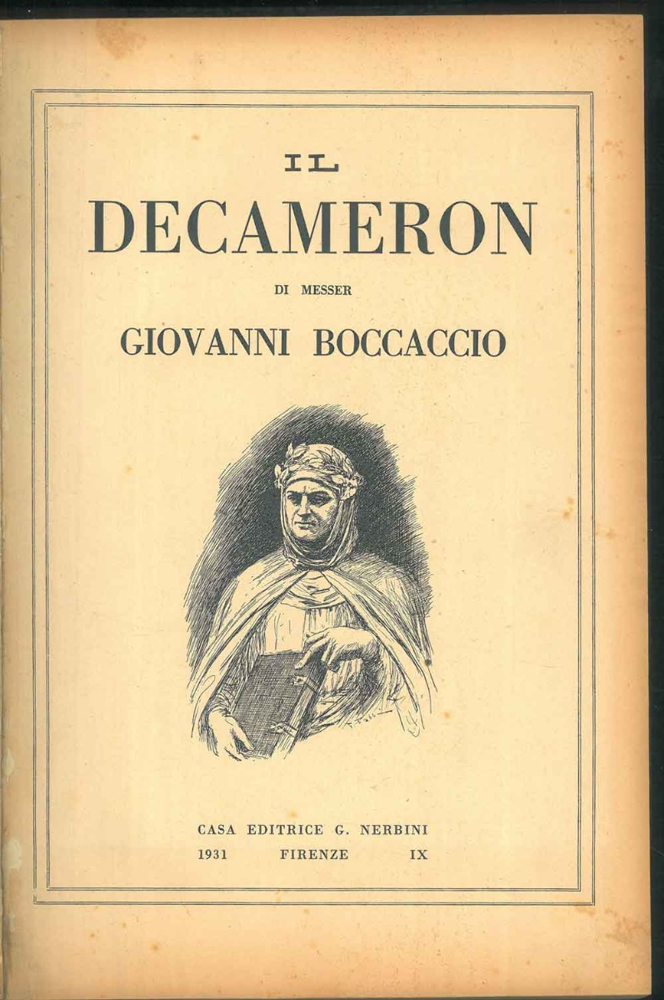
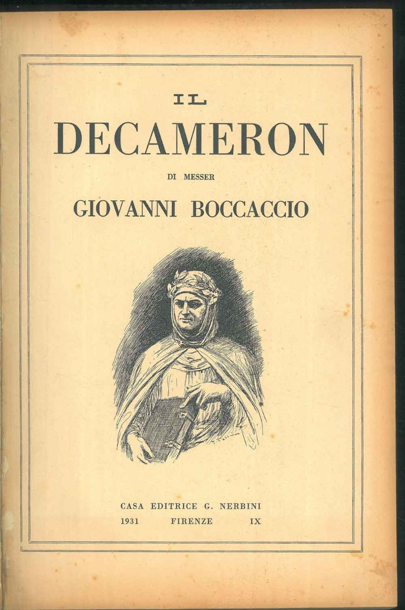
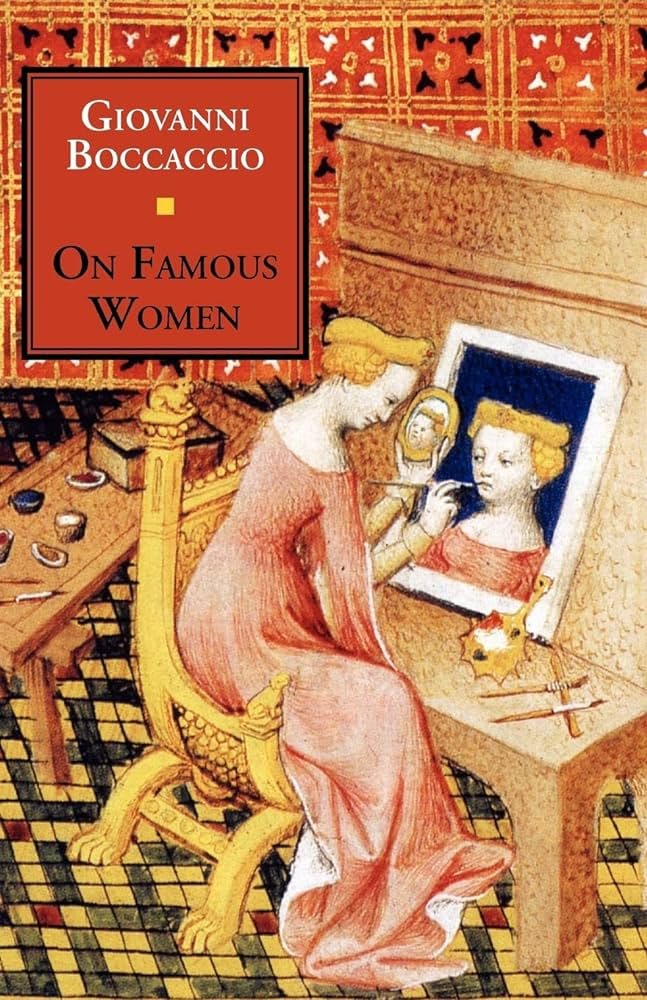
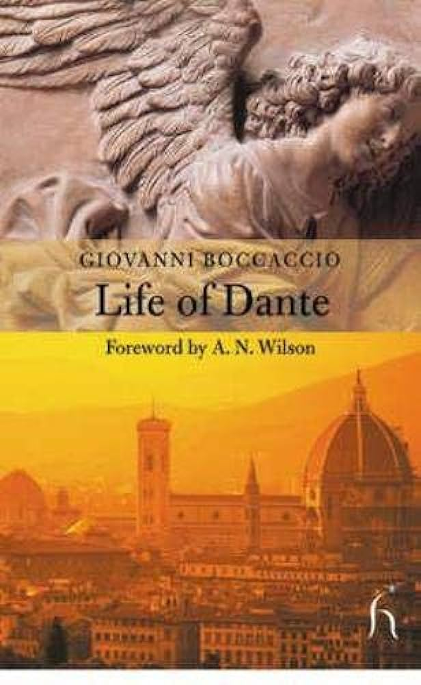
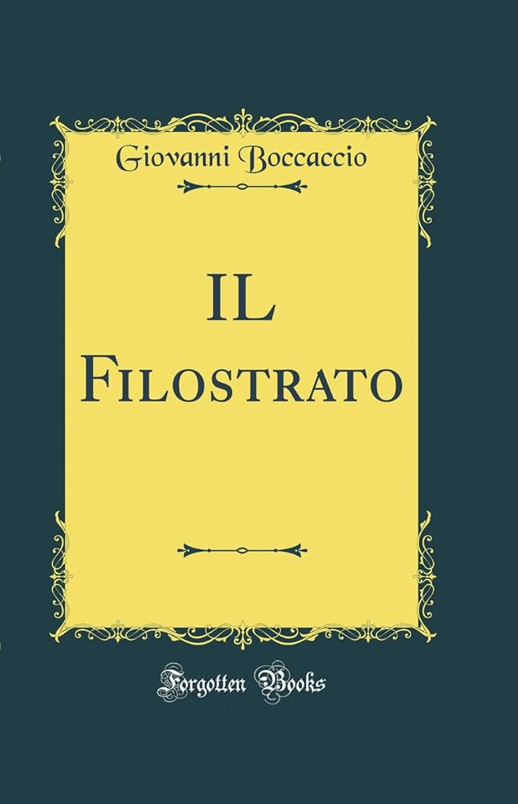
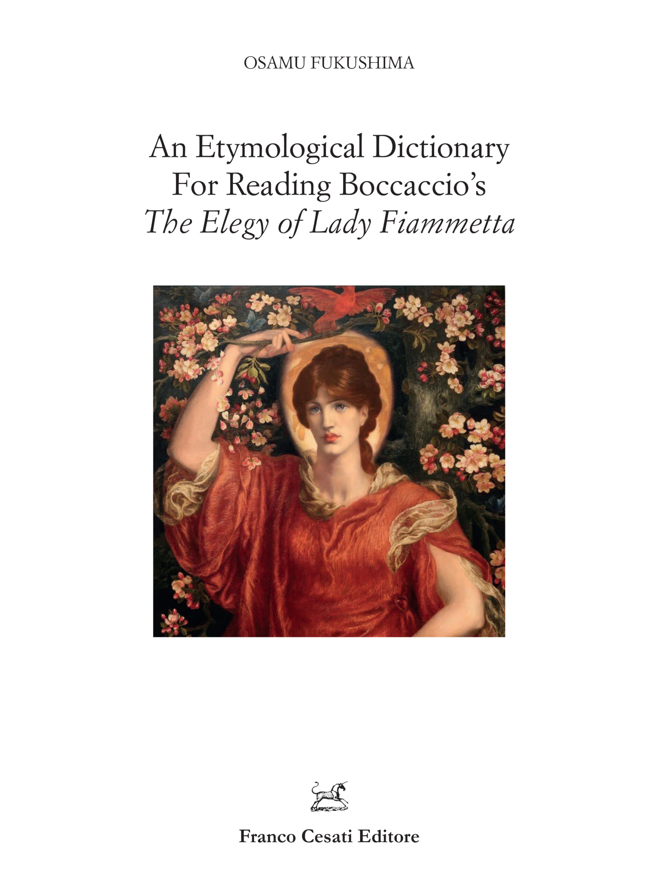
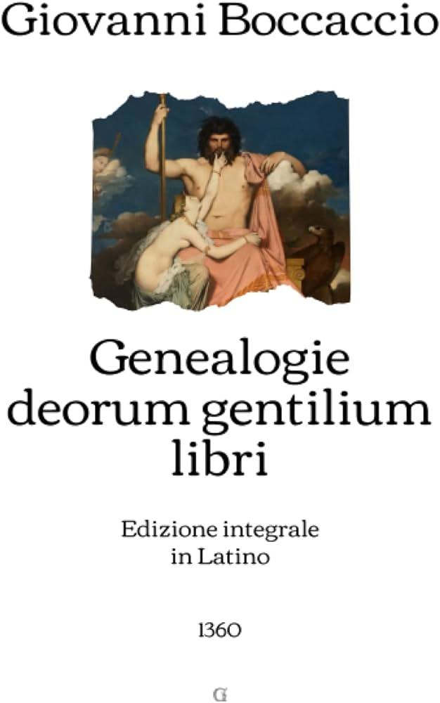

<-- Home
Giovanni Boccaccio:
 

Giovanni Boccaccio è stato uno scrittore e poeta italiano nato nel 1313 nella città di Certaldo, vicino a Firenze. È considerato uno dei fondatori della lingua letteraria italiana e ha avuto una profonda influenza sullo sviluppo della letteratura italiana. L'opera più famosa di Boccaccio è "Il Decameron", una raccolta di 100 novelle raccontate da un gruppo di giovani fuggiti in campagna per sfuggire alla peste nera. Le storie del "Decameron" esplorano vari temi, tra cui l'amore, la moralità e la classe sociale. Oltre a "Il Decameron", Boccaccio scrisse molte altre opere degne di nota, tra cui "Sulle donne famose", una raccolta di biografie di donne famose dai tempi antichi ai giorni nostri, e "La vita di Dante", una biografia dell'italiano poeta Dante Alighieri. Lo stile di scrittura di Boccaccio è caratterizzato dalla sua chiarezza, semplicità ed eleganza, e le sue opere sono ampiamente considerate capolavori della letteratura italiana. Il suo contributo allo sviluppo della lingua letteraria italiana e la sua esplorazione di vari temi e argomenti hanno consolidato il suo posto come una delle figure più importanti della storia letteraria italiana. Boccaccio è noto per molte altre opere significative. Ecco qui alcuni di loro:
- "Sulle donne famose" (De claris mulieribus): questa è una raccolta di biografie di donne famose della mitologia, della Bibbia e della storia. È stata una delle prime opere del suo genere ed è un'importante fonte di informazioni sulla vita e sulle conquiste delle donne nel periodo medievale.
- "La vita di Dante": questa è una biografia del poeta italiano Dante Alighieri, che fu amico e mentore di Boccaccio. È un'importante fonte di informazioni sulla vita e le opere di Dante ed è notevole anche per il suo ritratto comprensivo del poeta.
- "Il Filostrato": Questo è un poema narrativo che racconta la storia dell'eroe della guerra di Troia Troilo e del suo amore per la bella Cressida. È stata una fonte per "Troilo e Criseyde" di Geoffrey Chaucer ed è un'opera importante nello sviluppo della tradizione romantica europea.
- "L'elegia di Lady Fiammetta" (Elegia di Madonna Fiammetta): questo è un romanzo che racconta la storia della storia d'amore di una giovane donna e del conseguente crepacuore. È notevole per la sua rappresentazione realistica della soggettività femminile ed è un'opera importante nello sviluppo della tradizione del romanzo europeo.
- "Genealogia deorum gentilium": si tratta di un'indagine completa della mitologia classica che fu ampiamente letta e influente nel periodo rinascimentale. È un'importante fonte di informazioni sui miti antichi e sulla loro interpretazione ed è anche notevole per la sua difesa dello studio della letteratura classica.
Queste sono solo alcune delle altre opere degne di nota di Boccaccio. Fu uno scrittore prolifico e versatile che diede importanti contributi a una vasta gamma di generi e forme letterarie.

<-- Home